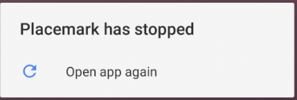
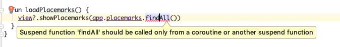

Introduce a new PlacemarkStore implementation to persist to an SQLite database
In 2017 Google introduced a vastly simplified approach to persisting objects to the SQLite database called Rooms:
Review the introduction above (just the page linked) before proceeding.
First, we need to include the rooms libraries:
New dependencies:
A new plugin at the top of the file:
apply plugin: "kotlin-kapt"A new version identifier:
room_version = "2.0.0"New libraries:
implementation "androidx.room:room-runtime:$room_version"
kapt "androidx.room:room-compiler:$room_version"Note the second dependency is slightly different - a kapt entry. Kapt is an annotation processor:
and we are using it here to engage the Room annotations we are about to use.
Rebuild now to make sure the libraries are correctly included.
Now we need to adjust PlacemarkModel with additional annotations:
package org.wit.placemark.models
import android.os.Parcelable
import androidx.room.Entity
import androidx.room.PrimaryKey
import kotlinx.android.parcel.Parcelize
@Parcelize
@Entity
data class PlacemarkModel(@PrimaryKey(autoGenerate = true) var id: Long = 0,
var title: String = "",
var description: String = "",
var image: String = "",
var lat : Double = 0.0,
var lng: Double = 0.0,
var zoom: Float = 0f) : ParcelableWe have included 2 additional annotations:
These annotations will enable PlacemarkModel objects to be stored in a Room database.
In a new room package, include these new classes:
package org.wit.placemark.room
import androidx.room.Database
import androidx.room.RoomDatabase
import org.wit.placemark.models.PlacemarkModel
@Database(entities = arrayOf(PlacemarkModel::class), version = 1)
abstract class Database : RoomDatabase() {
abstract fun placemarkDao(): PlacemarkDao
}package org.wit.placemark.room
import androidx.room.*
import org.wit.placemark.models.PlacemarkModel
@Dao
interface PlacemarkDao {
@Insert(onConflict = OnConflictStrategy.REPLACE)
fun create(placemark: PlacemarkModel)
@Query("SELECT * FROM PlacemarkModel")
fun findAll(): List<PlacemarkModel>
@Query("select * from PlacemarkModel where id = :id")
fun findById(id: Long): PlacemarkModel
@Update
fun update(placemark: PlacemarkModel)
@Delete
fun deletePlacemark(placemark: PlacemarkModel)
}These are classes that a new version of the PlacemarkStore interface can use to implement a new store.
Here is a first implementation of PlacemarkStoreRoom
package org.wit.placemark.room
import android.content.Context
import androidx.room.Room
import org.jetbrains.anko.coroutines.experimental.bg
import org.wit.placemark.models.PlacemarkModel
import org.wit.placemark.models.PlacemarkStore
class PlacemarkStoreRoom(val context: Context) : PlacemarkStore {
var dao: PlacemarkDao
init {
val database = Room.databaseBuilder(context, Database::class.java, "room_sample.db")
.fallbackToDestructiveMigration()
.build()
dao = database.placemarkDao()
}
override fun findAll(): List<PlacemarkModel> {
return dao.findAll()
}
override fun findById(id: Long): PlacemarkModel? {
return dao.findById(id)
}
override fun create(placemark: PlacemarkModel) {
dao.create(placemark)
}
override fun update(placemark: PlacemarkModel) {
dao.update(placemark)
}
override fun delete(placemark: PlacemarkModel) {
dao.deletePlacemark(placemark)
}
fun clear() {
}
}Lets try it out. In main, create PlacemarkStoreRoom instead of whatever version you are currently using:
class MainApp : Application(), AnkoLogger {
lateinit var placemarks: PlacemarkStore
override fun onCreate() {
super.onCreate()
placemarks = PlacemarkStoreRoom(applicationContext)
info("Placemark started")
}
}Run the app now:

If you interrogate logcat - you will (eventually) uncover the issue:
2018-11-16 16:50:58.333 12758-12758/org.wit.placemark E/AndroidRuntime: FATAL EXCEPTION: main
Process: org.wit.placemark, PID: 12758
java.lang.RuntimeException: Unable to start activity ComponentInfo{org.wit.placemark/org.wit.placemark.views.placemarklist.PlacemarkListView}: java.lang.IllegalStateException: Cannot access database on the main thread since it may potentially lock the UI for a long period of time.
at android.app.ActivityThread.performLaunchActivity(ActivityThread.java:2665)
at android.app.ActivityThread.handleLaunchActivity(ActivityThread.java:2726)
at android.app.ActivityThread.-wrap12(ActivityThread.java)
at android.app.ActivityThread$H.handleMessage(ActivityThread.java:1477)
at android.os.Handler.dispatchMessage(Handler.java:102)
at android.os.Looper.loop(Looper.java:154)
at android.app.ActivityThread.main(ActivityThread.java:6119)
at java.lang.reflect.Method.invoke(Native Method)
at com.android.internal.os.ZygoteInit$MethodAndArgsCaller.run(ZygoteInit.java:886)
at com.android.internal.os.ZygoteInit.main(ZygoteInit.java:776)
Caused by: java.lang.IllegalStateException: Cannot access database on the main thread since it may potentially lock the UI for a long period of time.
at androidx.room.RoomDatabase.assertNotMainThread(RoomDatabase.java:209)
at androidx.room.RoomDatabase.query(RoomDatabase.java:237)
at org.wit.placemark.room.PlacemarkDao_Impl.findAll(PlacemarkDao_Impl.java:137)
at org.wit.placemark.room.PlacemarkStoreRoom.findAll(PlacemarkStoreRoom.kt:21)
at org.wit.placemark.views.placemarklist.PlacemarkListPresenter.loadPlacemarks(PlacemarkListPresenter.kt:23)
at org.wit.placemark.views.placemarklist.PlacemarkListView.onCreate(PlacemarkListView.kt:25)
at android.app.Activity.performCreate(Activity.java:6679)
at android.app.Instrumentation.callActivityOnCreate(Instrumentation.java:1118)
at android.app.ActivityThread.performLaunchActivity(ActivityThread.java:2618)
at android.app.ActivityThread.handleLaunchActivity(ActivityThread.java:2726)
at android.app.ActivityThread.-wrap12(ActivityThread.java)
at android.app.ActivityThread$H.handleMessage(ActivityThread.java:1477)
at android.os.Handler.dispatchMessage(Handler.java:102)
at android.os.Looper.loop(Looper.java:154)
at android.app.ActivityThread.main(ActivityThread.java:6119)
at java.lang.reflect.Method.invoke(Native Method)
at com.android.internal.os.ZygoteInit$MethodAndArgsCaller.run(ZygoteInit.java:886)
at com.android.internal.os.ZygoteInit.main(ZygoteInit.java:776)The report here is:
org.wit.placemark.views.placemarklist.PlacemarkListView}: java.lang.IllegalStateException: Cannot access database on the main threadOut application has been terminated by Android, as we attempted to access a potentially long running operation (a database lookup) on the main thread.
This is quite a challenging area to get to grips with:
However, as we are using Kotlin - we have a number of language features that can greatly simplify how we do this.
Android will not permit access to the database on the main UI thread - as it can seriously degrade performance.
Qhen working with Kotlin we have considerable convenience methods available via the anko libraries when attempting multi-threaded development in Android:
Before brining these features in your our application, we make some changes to the way we have defined the PlacemarkMemStore interface:
interface PlacemarkStore {
suspend fun findAll(): List<PlacemarkModel>
suspend fun findById(id:Long) : PlacemarkModel?
suspend fun create(placemark: PlacemarkModel)
suspend fun update(placemark: PlacemarkModel)
suspend fun delete(placemark: PlacemarkModel)
}Each method is marked with the keyword suspend. To get an initial understanding of the purpose of this keyword, read this (5 min):
In addition, look at this article (7 mins):
Making the above change to PlacemarkStore will break the PlacemarkMemStore and PlacemarkJSONStore implementations. Fix them now by marking all of those classes with the equivalent suspend marker:
suspend override fun findAll(): MutableList<PlacemarkModel>
...
...
...Rebuild the project - all of the Model classes should build, However, there will be errors in these three presenters:
This is the type of error you may see:

To get the application to function correctly - we need to revise PlacemarkStoreRoom to properly use the background thread for all database access
package org.wit.placemark.room
import android.content.Context
import androidx.room.Room
import org.jetbrains.anko.coroutines.experimental.bg
import org.wit.placemark.models.PlacemarkModel
import org.wit.placemark.models.PlacemarkStore
class PlacemarkStoreRoom(val context: Context) : PlacemarkStore {
var dao: PlacemarkDao
init {
val database = Room.databaseBuilder(context, Database::class.java, "room_sample.db")
.fallbackToDestructiveMigration()
.build()
dao = database.placemarkDao()
}
suspend override fun findAll(): List<PlacemarkModel> {
val deferredPlacemarks = bg {
dao.findAll()
}
val placemarks = deferredPlacemarks.await()
return placemarks
}
suspend override fun findById(id: Long): PlacemarkModel? {
val deferredPlacemark = bg {
dao.findById(id)
}
val placemark = deferredPlacemark.await()
return placemark
}
suspend override fun create(placemark: PlacemarkModel) {
bg {
dao.create(placemark)
}
}
suspend override fun update(placemark: PlacemarkModel) {
bg {
dao.update(placemark)
}
}
suspend override fun delete(placemark: PlacemarkModel) {
bg {
dao.deletePlacemark(placemark)
}
}
fun clear() {
}
}Each method is now calling the database functions on the background thread via the bg helper:
To make the presenters work with the revised model, all called to the suspend versions of the PlacemarkStore objects will need to be reconfigured.
Each call to a suspend method will need revision:
fun loadPlacemarks() {
async(UI) {
view?.showPlacemarks(app.placemarks.findAll())
}
} ...
fun doDelete() {
async(UI) {
app.placemarks.delete(placemark)
view?.finish()
}
}
...
fun doAddOrSave(title: String, description: String) {
placemark.title = title
placemark.description = description
async(UI) {
if (edit) {
app.placemarks.update(placemark)
} else {
app.placemarks.create(placemark)
}
view?.finish()
}
}
... fun loadPlacemarks() {
async(UI) {
view?.showPlacemarks(app.placemarks.findAll())
}
}All of these rely on the following imports:
import kotlinx.coroutines.experimental.android.UI
import kotlinx.coroutines.experimental.asyncThis should rebuild now and run without error
Placemark application so far:
Rework the PlacemarkModel so that, instead repeating lat/lng/zoom in each placemark, we embed a Location object. In order to implement this in the context of the Room system, you will need to use the @Embedded annotation:
Also, you will also have to adjust the other Store implementations.